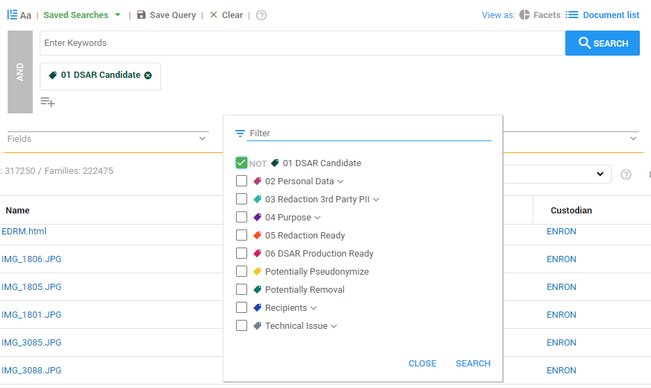

> Sampling > Create for Documents/Selection.
> Sampling > Create for Documents/Selection. Once the documents are tagged and redacted, they must be reviewed again to ensure that the purpose is clear and no personal data belonging to third parties have been overlooked.
To easily find all the relevant documents and review them, Enron uses the tag search function of ZyLAB ONE. This function allows the reviewer to find all documents with certain tags. In this case, all documents that are relevant have been tagged with 01 DSAR Candidate.

Once each document is reviewed, the 06 DSAR Production Ready tag is applied. This will ensure that all documents are reviewed and ready for production.
Once the documents are reviewed, sampling can be used to evaluate the results of the review process. This phase of the process ensures that all documents have been reviewed thoroughly.
Sampling uses a set of random documents to evaluate the review process. Sampling can be used to evaluate the tagging and redaction of documents. This step is important to ensure no third party personal data have been overlooked.
The Sampling function allows users to sample documents within the selected parameters and manually examine a certain percentage of those documents in order to ensure GDPR compliancy. First, the user selects the criteria to determine which documents must be selected for sampling. This starts in Document List View. For instance, this can be done by selecting tags that signify that a document has been reviewed, like the Redaction Ready or DSAR Production Ready tags, or documents that contain personal information that should be redacted that are tagged with the Redaction 3rd Party PII tag. The tags can be applied in the Document List View.
During Preview, documents that ZyLAB ONE has randomly selected from the configured dataset are manually examined. Here, users carefully examine whether the document has been assigned with the appropriate tags, and whether the document is GDPR compliant. The redactions performed on the documents will appear on this screen as well. Finally, after examining the document, users have to make the choice whether the document is correct or incorrect.
Use Sampling to evaluate the results of the review process. For example, evaluate the tagging results of individual users.
A sample will be created from all documents currently available in the Document List (after filtering/searching).
Select Settings > Sampling > Create for Documents/Selection.
1 - Sampling

2 - Preview


3 - Apply